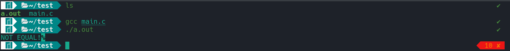
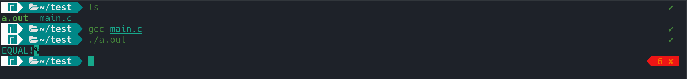

Floating Numbers
Usually we don't deal much with floating numbers on a daily basis but this one's in particularly interesting.
below is are two programs and their respective outputs.
//main.c
#include "stdio.h"
void main()
{
float x = 4.2;
if(x==4.2)
printf("EQUAL!");
else
printf("NOT EQUAL!");
}
and the ouput for this particular program is

let me go on explaining this so the 4.21 on the right hand side of the equality operator is a double and the 4.21 on the left hand side is a float.but let's dive a bit deeper into this.for our better understanding we will consider a higher abstraction.so let's convert this float and double into binary so that things gets easy for us.
float (32 bits) --> 4.2 --> 0100 . 0011 0011 0011 0011 0011 0011 0011
double (64 bits) -->4.2 --> 0100 . 0011 0011 0011 0011 0011 0011 0011 0011 0011 0011 0011 0011 0011 0011
KEEP IN MIND that this is just a high level abstraction. this not how the bits are stored in memory.
I'll write about the binary memory representation of floating numbers in a different
blog post. so we can clearly see that the number of bits are unequal and hence that's why
the condition becomes false and control goes to the else statement. changing the 4.21 of the
right hand side of the equality operator to 4.21f will make the condition true for the
if block. Incase you are wondering how to convert the floating point to binary (i.e 0.2) here
is a representation of it.
0.2*2=0.4 -> 0 |<----
0.4*2=0.8 -> 0 | |
0.8*2=1.6 -> 1 | |
0.6*2=1.2 -> 1 ⌄ |
0.2*2=0.4 -> 0 ------
Now moving on to the next program
//main.c
#include "stdio.h"
void main()
{
float x = 4.5;
if(x==4.5)
printf("EQUAL!");
else
printf("NOT EQUAL!");
}
and the ouput for this program is

Interesting right? just by changing the number we get a different output. so let get into it so when we convert the float and double to binary to get an idea.
float (32 bits) --> 4.5 --> 0100 . 0100 0000 0000 0000 0000 0000 0000
double(64 bits) --> 4.5 --> 0100 . 0100 0000 0000 0000 0000 0000 0000 0000 0000 0000 0000 0000 0000 0000
so we can see here there is no repetition of bits it's just 0's after the first two bits after the floating point hence the condition turns out to be true and the if block gets executed.
if you have any clarifications or rectification in the blog feel free to reach out :)